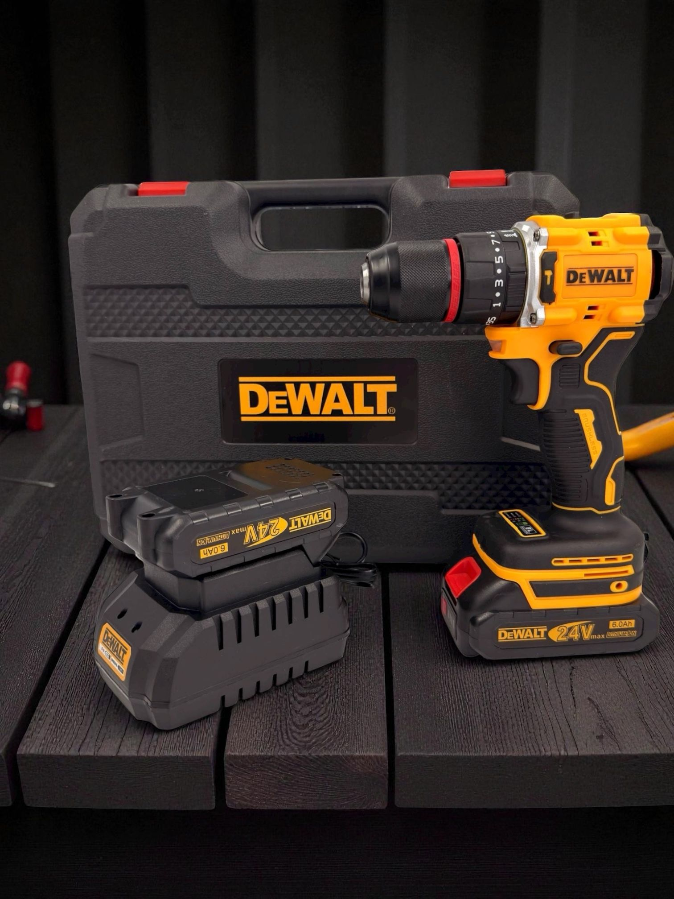

Шуруповёрт DeWALT 24V бесщеточный ударный
ИнструментыЭто аккумуляторный ударный шуруповёрт DeWALT с бесщёточным двигателем. По маркировке и официальным материалам наиболее вероятная каноническая модель — DCF809B / DCF809 (20V MAX, 1/4" hex).
Инструмент предназначен для закручивания и выкручивания крепежа с ударным механизмом, что помогает при работе с длинными шурупами и плотными материалами. Бесщёточный мотор снижает износ и обычно повышает эффективность по сравнению с щёточными моделями. У модели используется быстросъёмный 1/4" шестигранный патрон для бит и насадок. Это компактный профессиональный инструмент из линейки DeWALT 20V MAX, рассчитанный на работу от аккумулятора. В зависимости от комплектации может поставляться как «tool only» или в наборе с батареями и зарядным устройством.